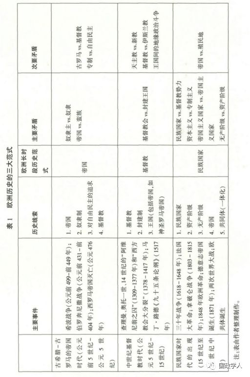
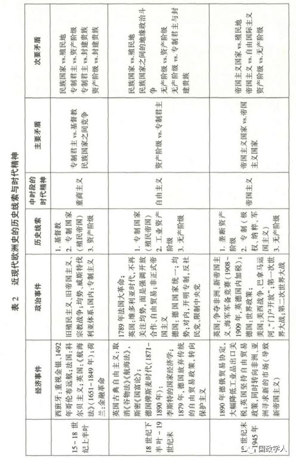
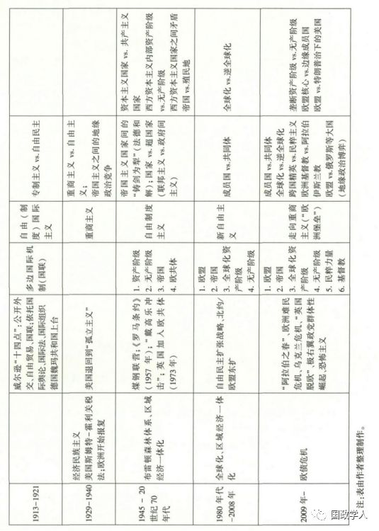
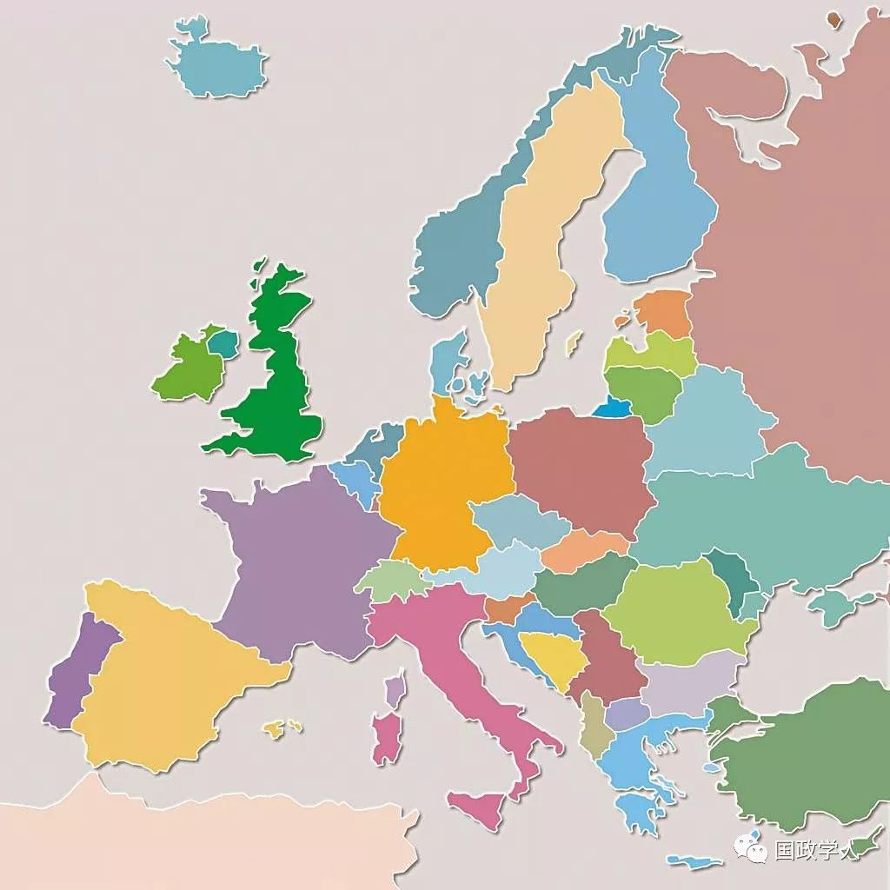

收录于合集

简 介
【 作者 】
张晓通,武汉大学政治与公共管理学院教授,江苏海事职业技术学院“一带一路”应用型海事人才研究院研究员; 赖扬敏,武汉大学经济外交研究中心助理研究员
【 编辑 】刘瑛琛
【 校队 】杨艺华、李源
【 来源 】《欧洲研究》2018年第5期
内容提要
欧洲正在遭受多重危机。危机之所以呈现多重性，源于欧洲历史上帝国、基督教、民族国家、资本主义等多条历史线索的并存与缠斗。这些线索长期存在于“欧洲历史老人”体内，其演进及彼此间的相生相克，是欧洲历史的推动力量。自古希腊以来，欧洲经历了帝国、基督教、民族国家三大范式。第二次世界大战后，欧洲发展出了一条新的历史线索——“共同体”线索。“共同体”能否成为欧洲历史的第四大范式，取决于其在多条历史线索的缠斗中能否适应并最终获胜。受多线索震荡的影响，主权债务危机以来的欧洲呈现“多维度不均衡”状态，正走向新的历史合体。第一阶段将走向“欧洲堡垒”，对内继续推行经济一体化，对外实施重商主义和有限扩张，吸纳西巴尔干诸国入盟。第二阶段可能走向“欧洲帝国”内部出现等级制，对外与美国共筑“跨大西洋帝国共同体”，并大幅对外扩张。
关键词： 历史范式 历史线索 时代精神 “欧洲堡垒” “欧洲帝国”
正 文
80 年之后，即 21 世纪接近尾声之时，人们回顾当前欧洲乱局，也许会将 21 世纪头20 年这段危机频仍、孕育激变的岁月称为“欧洲历史的再出发”。从 2009年爆发的欧洲主权债务危机到 2010 年年底开始的“阿拉伯之春”及其后续引发的“欧洲难民危机”再到 2013 年的“乌克兰危机”2016 年的“英国脱欧”和当前欧洲极右翼政党的群体性崛起，欧洲正在经历多重危机，前途未卜。欧洲向何处去？英国政治学家、历史学家塞缪尔·芬纳曾经说过:“自从西罗马帝国灭亡之后，欧洲的突出特征就是它从来没有停止前进的步伐，它总是躁动不安，总是跃跃欲试……欧洲大陆仿佛在全力追求什么，但是这种追求永无止境，追求之路没有特定的终点，而是有几个终点可以选择”。芬纳“不可知论式”的回答凸显了欧洲历史的复杂性，有多个历史进程、多条历史线索潜伏在欧洲体内，共同影响着欧洲的未来。
本文尝试探讨欧洲的未来，使用的方法可称之为“历史修复法”，即根据当前欧洲发生的多重危机，探寻这些危机的历史根源，通过历史倒推的方法复原历史，找到历史演进的逻辑; 基于欧洲历史演进的规律，预测欧洲的未来。 这种“历史修复法”，颇似文物修复，在现有文物残迹的基础上，凭借人类掌握的哲学、历史、政治、经济和文化等 各学科知识，依托理性思维、合理推测和想象，试图重新汇编历史和探索未来。但正如美国哲学家、历史学家威尔·杜兰特所言，历史编纂不能算是一门科学，它只能算是一个行业、一门艺术和一种哲学——一个搜集史实的行业，一门通过将混乱的材料有意义地排列起来的艺术，一种寻求预见性观点和启蒙作用的哲学。 本文是在艺术、哲学而非科学的层面，探索欧洲的未来走势，得出的结论仅供启发思维之用，而非追求“斩钉截铁”的历史铁律。
一、发掘历史线索: 审视当前欧洲的多重危机
2009 年至今的十年间，欧洲爆发了多重危机，概括起来有四大类: 一是欧洲主权债务危机。 欧债危机爆发的原因有多种解释。 其中比较流行的一种观点是认为欧盟的治理体系不完善，尤其是货币政策和财政政策不协调，即欧元区实行的是统一的货币政策、分散的财政政策。 由此体现了欧洲一体化进程中国家与超国家、扩大与深化这两对基本矛盾。 从欧洲历史演变的长时段观之，民族国家的历史范式尚未完全衰落，而一体化( 或曰“共同体”)的历史范式仍未演进成为主导范式。民族国家范式自 15 世纪诞生以来，至今已有 500 多年的历史，而欧洲共同体是二战后才出现的。范式的矛盾斗争是一场“马拉松式的”长跑，也是决定欧洲历史的重要动力。
解释欧债危机深层原因的第二种观点是从资本主义的基本矛盾出发，沿用历史唯物主义视角，认为美国的金融危机与欧洲的主权债务危机是资本主义基本矛盾———生产社会化和资本主义生产资料私人占有之间矛盾激化的集中体现，是资本主义进入金融资本 主义阶段的必然结果。 在这一阶段，经济危机呈现新的特点: 去工业化和产业空心化趋势严重，产业竞争力下降; 经济高度金融化，虚拟经济与实体经济严重脱节; 财政严重债务化，债务危机频繁爆发; 两极分化和社会对立加剧等。 金融危机期间，时任总理温家宝就指出，国际金融危机的根源之一就是“一些金融机构见利忘义，利用所谓 高杠杆率获取巨额资金而造成金融秩序紊乱”。从资本主义基本矛盾的角度看，欧债危机与次贷危机一样，都是新的发展阶段中资本主义固有矛盾的集中表现。 资本主义作为一条历史线索，一直以来都是推动欧洲历史演进的重要力量。资本主义所激发的巨大生产力及其导致的社会不平等、不公正，会继续左右欧洲政局，影响欧洲的未来。
欧洲面临的第二类危机是地缘政治危机，以克里米亚危机、叙利亚危机、俄罗斯与北约在波罗的海对峙为代表，反映出大国之间为争夺地理实体的控制权而展开的竞争。 最近十年，欧洲主要的地缘政治危机都发生在三大“地中海”及其沿岸，分别是传统的欧洲－北非地中海(“阿拉伯之春”进程中的利比亚战争和叙利亚战争) 、黑海(克里米亚危机)和波罗的海(北约与俄罗斯之间的军事对峙)。从波罗的海经中东欧直到黑海和西巴尔干依次展开，一道新的冷战“铁幕”正徐徐落下。就地理位置而言，西欧是位于欧亚大陆最西端的一个半岛。历史上，来自东方的力量经常袭扰西欧，如希波战争(公元前499－前449年)中的波斯帝国入侵希腊，西匈奴首领阿提拉(Attila，公元 406－453年)多次劫掠东西罗马帝国; 阿拉伯人围攻君士坦丁堡(公元717 － 718 年)，1453年君士坦丁堡陷落。而位于东方与西方之间的中东欧国家，则沦为所谓的“破碎地带”( shatter belts)。欧亚大陆的历史变迁后来被英国地理学家麦金德概括为“游牧民族与定居民族之间延续千年的博弈”，亦可视为欧亚大陆的边缘地带与“心脏地带”之间的斗争。麦金德所谓的“心脏地带”指的是沙皇俄国以及后来的苏联及其势力范围。如果说欧洲内部的经济社会问题是欧洲多重危机的内因，那么地缘政治 则是一项重要的外因。
第三类危机是宗教与文明冲突。“阿拉伯之春”、利比亚战争和叙利亚战争之后，大量中东难民涌入欧洲，造成欧盟成员国国内社会动荡、恐怖主义激增，并演变为宗教与文明的冲突。 一方面，难民危机反映出欧洲的价值观与欧洲经济社会接纳能力之间的紧张关系，即经济形势好时，接纳一些移民问题并不大，一旦经济社会条件恶化，则很难“兼济天下”。但另一方面，也是更深层次地反映出欧洲不同地区之间以及欧洲基督教与阿拉伯伊斯兰教之间延续千年的宗教与文明冲突。一直以来，移民现象贯穿欧洲历史始终，是欧洲经济社会演变的重要推动力量。自 2 世纪始，在匈奴人的西侵过程中，日耳曼人、斯拉夫人大规模西进和南下，到 476 年日耳曼国王奥多亚赛废黜西罗马帝国最后一个皇帝罗慕路斯·奥古斯图鲁斯，再到当前数百万阿拉伯难民涌入欧洲，移民现象(包括难民) 一直深刻影响着欧洲社会，并带来了一系列矛盾和变迁。
第四类危机是“帝国”过度扩张的危机。2004年欧盟东扩是西欧在北约东扩的背景下，打着“自由民主”旗号实施的一种“帝国再造”的努力。 目前，由于“帝国”的过 度扩张，正面临被迫收缩的压力，典型代表是“脱欧”危机和中心－边缘地带之间的矛盾。“脱欧”危机历史上就有，如 20 世纪 60 年代的“戴高乐冲击”，而当前的“英国脱欧”集中体现了成员国与欧盟之间的矛盾，表明成员国民众对现实的不满，也反映出 成员国对主权的眷恋与坚持。欧盟内部中心－边缘矛盾主要体现为欧盟总部与中东欧国家之间、欧洲发达地区与欠发达地区之间的矛盾。这类危机体现出欧盟内部发展的不均衡，其根源是中心国家对边缘国家的控制与剥削，以及边缘国家对中心国家的反控制与反剥削，也是帝国扩张面临的普遍问题。
当前欧洲面临的多重危机，反映出欧洲存在多重矛盾和多条历史线索。正如费尔 南·布罗代尔在《地中海与菲利普二世时代的地中海世界》一书结论中所言: “我的意愿中，历史应该是一首能够用多种声部唱出的、听得见的歌曲。但是，它有这样一个明显的缺点: 它的各个声部常常互相遮掩覆盖。在所有这些声部中，没有一种能够永远使自己作为独唱被人承认、接受并把伴奏拒之千里之外。”当前欧洲的多重危机就体现了欧洲历史中的“多个声部”，即多条历史线索。这些“历史线索”，犹如一颗颗种子，在欧罗巴的体内孕育生长，有潜力成长为欧洲历史上新的政治、经济、社会或文化结构。这些线索一旦产生，往往具有很强的生命力，亦包含了全面掌控欧洲历史、接管一个时代的雄心，但最终仅有有限的几条历史线索可以成为一个时代的主导范式;而且在每一个长达几世纪的时代中，只可能有一条线索在与其他线索激烈互动后成长为主导范式。在当前欧洲多重危机的背后，至少有六条线索若隐若现: 一是帝国;二是基督教; 三是民族国家; 四是资本主义; 五是相对弱势群体对自由民主的追求; 六是构建共同体的努力。这些历史线索不是今天才有，而是从历史上延续下来的，具有很强的生命力。欧洲当前面临的危机之所以具有多重性、复杂性，归根结底是历史线索的多重性和复杂性，即欧洲社会发展进程中多重矛盾的延续所致。更进一步而言，欧洲当前的多重危机，其实是三千年来存在于欧洲社会有机体当中既有基因之间多重矛盾的一种间歇性爆发，造成了多线索同时振荡的“多维度不均衡”现象。所谓“多维度不均衡”，指的是多条历史线索各自振荡、彼此缠斗及其引发的历史振荡现象。下文中，我们将通过“历史修复法”，顺着上述历史线索，简要梳理自古希腊以来三千年的欧洲史。本研究认为，欧洲历史发展是多线索的，有多种力量共同作用于欧洲历史，要理解欧洲的今天和预测欧洲的明天，必须要深刻理解欧洲历史发展的多线索演进和“多 维度不均衡”现象。
二、还原欧洲历史: 三大历史范式
参考传统的欧洲历史分段法，第二次世界大战前的欧洲历史大致可分为三个长时段。 每个长时段存在一个主导的历史范式，分别是帝国、基督教和民族国家。所谓“历史范式”，指的是一个长时段的政治经济与文化结构。每一种范式攫取了那个时代最大的政治、经济与精神权力，创造出和指导着那个时代的“时代精神”。 之所以如此分段，一方面是基于传统的欧洲历史分段方法，另一方面是基于对当前欧洲多重危机的观察。一般而言，历史具有连续性、传承性，当前欧洲面临的多重危机，源于多条历史线索的并存。具体来说，有六条主要的历史线索相继塑造了欧洲的历史进程: 首先是在古希腊－古罗马时代，“帝国”作为一条历史线索( 后来崛起为主导的历史范式) ，兴于掠夺和扩张，亡于帝国内核的腐朽堕落和过度扩张。今日欧盟之东扩，在很大程度上是帝国线索的体现，因此必然受制于帝国兴衰的逻辑———过度扩张导致“安全困境”。而在古罗马体内，兴起了“基督教”这条新的历史线索，最终成为古罗马的国教，并统治欧洲中世纪长达一千年( 公元 5 世纪－15 世纪) 。今日欧洲基督教与伊斯兰教之间的矛盾，根源可追溯至公元 7 世纪及后来的“十字军东征”导致的宗教冲突。在与教皇博弈的中世纪后期，逐渐兴起了现代意义上的“民族国家”这条历史线索; 而在民族国家发展、“地理大发现”及宗教改革的浪潮中，“资本主义”线索诞生、发展并壮大起来。在民族国家、资本主义发展的过程中，又出现了对自由民主的追求这条新的历史线索，催生了 1789 年法国大革命和 1848 年欧洲革命; 而两次世界大战和冷战，则锻造出欧洲一体化，即“共同体”这条全新的历史线索。因此，帝国、基督教、民族国家、资本主义、对自由民主的追求以及共同体，一同构成了自古希腊以来欧洲三千年历史演进的基本脉络。由于历史线索的共存、交织、数量上的增加和彼此间的缠斗，欧洲历史的演进逐渐出现多线索并进以及在危机时刻出现的“多维度不均衡”现象。沿着历史的逻辑，“共同体”线索有潜力成为主导欧洲未来的新的历史范式，但所有出现过的历史线索并不会消失，而是共同作用于欧洲的未来。欧洲的前途也因此充满动荡与不确定性。
(一) 古希腊－古罗马帝国时代(公元前 5 世纪－公元 5 世纪)
这是人类历史上的古典时期。在欧洲文明发源地的古希腊，多山环海的地形和航海业、商业的发达促进了城邦的出现和扩张。在古典时代早期，希腊人居住在独立的、自治的城邦里，但随着殖民的需要和管理疆域扩大后带来的机遇与挑战，帝国逐渐成为一个新型的统治方式。雅典从希波战争(公元前 499－前 449 年) 之后就逐渐成为雅典帝国，对内实行奴隶制基础上的民主政治，对其他城邦则实行不平等的帝国统治。在萨拉米战役(公元前 480 年) 后，提洛同盟的大部分城邦向雅典缴纳捐税，供其装备和指挥舰队。各城邦逐渐沦为雅典的从属。这些贡金支持了雅典的政府运作，同时也为伯里克利领导下的雅典大规模城市建设提供了资金。然而，由于波斯威胁的消失，其他城邦对缴纳贡金深恶痛绝，认为自己的贡金养肥了雅典人。最后，这种紧张和冲突导致了残酷和毁灭性的内战，即伯罗奔尼撒战争(前 431－前 404 年) 。据修昔底德记载，雅典人欺凌弱小， 无视其他城邦的利益与关注，坚持同盟应无条件站在雅典一边，对那些不服从的城邦给予严惩。例如，当米洛斯小岛拒绝承认雅典的权威时，雅典军队征服了该岛，屠杀了岛上所有处于兵役年龄的男性，并将女人和孩子卖为奴隶。诸如此类的暴行使雅典丧失了作为希腊人道德和知识领袖的声誉，并获得了傲慢、无情的帝国主义霸权的恶名。在伯罗奔尼撒战争中，伯罗奔尼撒同盟和斯巴达严格的军纪等优势得到彰显，而民主政治的弱点却暴露无遗。阿提卡(指雅典所在的地区) 的农民赞成和平，城里居民则希望继续战争。与此同时，雅典的好几个同盟者趁机挣脱雅典帝国主义经济政策的束缚。最终，斯巴达人利用波斯国王资助的舰队，打败了雅典。而在雅典帝国后，公元前 3 世纪晚期，希腊被其北部邻邦马其顿建立的庞大的、中央集权帝国征服。希腊进入了马其顿帝国时代，之后又成为罗马帝国的一部分。
古罗马时期，罗马共和国通过不断地扩张与征服建立了横跨欧亚的罗马帝国。图拉真时期( Trajan，公元 53－117 年) ，地中海成为罗马帝国的内湖。古罗马帝国凭借行政机构以及与之联结在一起的军事机构，抗衡帝国内部的分崩离析和来自外部的蛮族入侵。最终，帝国因难以维系地方对中央的忠诚和外族入侵而最终解体。古罗马的生存之道在于帝国的扩张及其广阔疆域的维系。扩张带来了更多的奴隶，服务于奴隶制大庄园经济，却导致城市两极分化、经济社会不平等，使古罗马帝国内部矛盾加剧。由此出现了广大下层贫苦民众信仰的基督教，并最终成为国教。基督教的出现彰显了下层民众与上层精英之间的矛盾。在古罗马帝国晚期，蛮族入侵、战乱频仍，世风日下，基督教在很大程度上成为那个动荡时代的“安抚剂和精神鸦片”，继而与政权成功结合，从而生存发展壮大，并在下一个历史长时段( 5 世纪后) 成为主导历史范式。
在古希腊－古罗马帝国时代，出现了帝国、奴隶制、对民主的追求以及基督教四条历史线索。这些线索各自独立发展，但亦相互斗争。在古罗马帝国晚期，帝国线索呈衰落之势，继而被打败、被替代，但自由民主的线索还显得过于稚嫩，希腊联盟打败波斯帝国凸显了民主政体的勃勃生机，但雅典最终败给斯巴达，希腊城邦国家为马其顿帝国和罗马帝国所吞并，则凸显了民主政体的局限性，彰显出那个时代帝国的强大。
但帝国最终被奴隶和蛮族入侵所推翻，帝国的历史范式被更代表平民和奴隶利益也更彰显平等力量的基督教所替代。然而有必要强调的是，帝国作为历史线索对欧洲的影响延续至今，从未消逝，而是一直潜伏于“欧洲历史老人”体内。中世纪与近代以来出现的各帝国都延续了古希腊/ 古罗马帝国形态，但亦有所区别。
(二) 中世纪基督教时代( 公元 5 世纪－15 世纪)
中世纪占主导地位的历史范式是基督教，基督教会兴起于古罗马帝国晚期，最终成为帝国的国教，及至中世纪，攫取了当时社会最大的政治、经济与精神权力。中世纪的欧洲历史发展有三对主要的矛盾: 一是基督教会与世俗王国之间的教权与王权之争; 二是基督教会内部的分裂与改革; 三是基督教与伊斯兰世界的对抗。在漫长的中世纪，基督教会在欧洲社会享有独一无二的至高权力，各国君主亦依赖教会的认可获得其统治的合法性。根据加洛林帝国时期( 800－888 年) 确立的政治理论，主教不仅是看管灵魂的，甚至直接参与管理社会。然而，日耳曼国王奥托一世在任命主教和修道院长问题上与罗马教廷发生冲突，被视为主教授职权争论的开始。天主教会自 11 世纪格列高利改革以来，一直追求统治世界，追求教皇的神权统治。根据“两把刀理论”，王权从属于教权。任命修道院院长和主教，然后授予职位的特权，成为教皇和皇帝争夺的赌注。虽然教皇在 13 世纪时似乎确实取得了胜利，但实际上地位并不稳固，因为远方已显露新的威胁，就是法国国王。14 世纪的“阿维尼翁之囚”(1309－ 1377 年) 和“西方教会大分裂”( 1378－ 1417 年) 则进一步削弱了教皇的威信，加之早期异端邪说的出现和传播，北欧国家中民族观念的增强以及与此相关的各国“新君主”的出现，使基督教会的权威受到削弱。以马丁·路德《九十五条论纲》( 公元 1517 年) 为开端，基督教会开始分裂。《奥格斯堡和约》( 1555 年) 授予路德教在德国的合法地位，德国宗教改革最终导致天主教派与路德教派几乎平分天下的局面。在欧亚大陆的另一端，11 世纪东西教会大分裂后形成了东罗马正教会。15 世纪，东罗马帝国因君士坦丁堡战役败亡，以希腊正教会与俄罗斯正教会为首的东正教会体系确立。另一条线索是与欧洲以外的宗教的冲突和对抗，其中也不乏交流和吸收。伊斯兰教自从在阿拉伯半岛上兴起之时就借阿拉伯诸帝国的力量不断向外扩张，与基督教之间冲突不 断，在“十字军东征”时期达到高潮。进入近现代社会后，随着西方政治经济变革的开始以及实力的增强，西方列强相继入侵伊斯兰世界，宗教的斗争又加入了政治斗争，使形势更加错综复杂。
由此可见，在中世纪，存在于欧洲体内的历史线索主要是基督教、封建制度和王国。在西欧，最主要的矛盾是基督教与封建王国之间的矛盾。相较于古希腊/ 古罗马的帝国时代，帝国已不是原来的奴隶制帝国，其范围比罗马帝国小了很多，也不是中央集权，而是统一于基督教的封建制帝国，国王、贵族、教会力量之间存在微妙的平衡。查理曼大帝、奥托一世建立了强大的封建帝国。1618－1648 年的 30 年战争，导致基督教的历史范式逐步被现代民族国家范式所取代，直至威斯特伐利亚体系建立。但基督教的历史线索并没有消失。在很大程度上，时至今日，欧盟依然是一个基督教共同体，不少政治精英仍然信仰基督教世界主义。2017年，一批欧洲的保守主义知识分子联名发表的《巴黎声明》就强调欧盟的基督教根基。换言之，基督教这条历史线索已经扎根于“欧洲历史老人”体内，延续至今。
(三) 民族国家时代(15 世纪至 20 世纪中叶)
在中世纪，基督教俨然是一个凌驾于各国之上的大帝国，各个国家犹如它的行省; 随着教会大一统的权威被削弱，民族国家兴起并承担原先由教会行使的诸多管理职能 成为大势所趋。在新的历史时期，民族国家具有一些帝国所不及的优势: 内部没有关税壁垒; 统一的行政和财政系统; 在行政管理中使用地方语言; 管理阶级的效忠对象是国家或作为代表国家的国王，而非王朝。正如大英帝国能打败大清帝国、普鲁士打败奥匈帝国一样，民族国家拥有比封建帝国更强大的生命力和战争能力。
现代意义上的民族国家发端于西欧最西端的葡萄牙、西班牙。葡萄牙可能是最早出现的现代意义上的民族国家。13 世纪中叶，葡萄牙终于从阿尔加维赶走了摩尔人，成为第一个———并且在很长时期内仍是第一个———拥有当今边境的国家。民族国家需要推翻“两座大山”: 一是教皇势力; 二是贵族势力。 在 15－ 18 世纪重商主义时代，国王们追求富国强兵，路易十四的“朕即国家”是典型代表。1648 年“三十年战争”结束后签订的《威斯特伐利亚和约》确立了“国家主权”原则，之后，以民族和语言为纽带的民族国家纷纷建立，以民族国家为国际行为主体的威斯特伐利亚体系一直延续至今，成为当今世界国家间关系的主导范式。在民族国家发展、“地理大发现”以及宗教改革的浪潮中，资本主义诞生、发展并强大起来; 而在此过程中，民众对自由民主的要求进一步强化，从而催生了 1789 年的法国大革命和 1848 年的欧洲革命; 当民族主义发展到极致，两次世界大战爆发;而在战后冷战格局的背景下，最终开启了欧洲一体化的进程。
在上述三个历史长时段中，都可以观察到欧洲历史中的“多维度不均衡”现象: 历史上出现的多条线索、多种力量同时存在并作用于欧洲身上，推动并制约着欧洲历史 的发展，导致欧洲历史从一种均衡过渡到另一种均衡。但这种均衡不稳定，会不停地演进，或前进，或倒退。而这种不均衡出现的原因是因为上述多条历史线索的相互竞争。这些历史线索一旦产生，便不会消失，而是深藏于欧洲结构的肌体内。这些线索相互竞争后，会出现一种新的形态，即新的均衡。而历史线索的竞争正是欧洲历史发展的决定性力量(见表
- 。
三、欧洲近现代史的历史分段与时代精神的更替
自 15 世纪现代意义上的民族国家诞生以来，历史见证了“民族国家”这个历史范式内部一系列既有历史线索之间的矛盾斗争，以及一些新的历史线索的产生。根据西 欧民族国家领导阶级的指导思想及其时代精神，我们将西欧的民族国家长时段(15 － 20 世纪中叶) 进一步细分为四个中时段: 重商主义(15 世纪－18 世纪上半叶) 、自由主义(1846－1890 年) 、帝国主义( 1890－ 1945 年) 和共同体时期(1945 年以来) 。这四个中时段的时代精神可分别概括为重商主义、自由主义、帝国主义和共同体精神(见表2) 。
(一) 国家重商主义时期(15 世纪－18 世纪上半叶)
这一时期的主要矛盾是新兴民族国家与基督教宗教势力之间的矛盾，最终以民族国家的胜利而告终。在此阶段，资本主义力量崛起，并帮助国王赢得了针对宗教势力的胜利。政治上，除了民族国家与宗教势力的矛盾斗争之外，民族国家之间的竞争亦逐步上升为主要矛盾。三十年战争即是典型代表。作为天主教会重臣的黎塞留和信仰天主教的法国国王路易十三，资助信仰新教的瑞典国王古斯塔夫·阿道弗斯( Gus- tavus Adolphus) 向神圣罗马帝国皇帝宣战; 战争结束后再次重申的“教随国定”原则， 均具有革命性的意义，可看作民族国家的胜利。
经济上，重商主义的时代精神和国家战略兴起。至 15 世纪末，西欧封建社会开始瓦解，资本主义生产关系萌芽，加之地理大发现扩大了世界市场、增加了金银货币来源以及加速了欧洲社会资本原始积累，西欧一些国家建立起中央集权，并运用国家力量支持商业资本的发展。重商主义即是这一时期的主导经济学思想，其关键在于运用国家力量和行政手段对进出口进行调控，以实现有利于本国的货币或者贸易差额。在重商主义时期，国家的权力得到加强，专制主义下的民族国家成为主导性的历史范式。最典型的代表就是法国国王路易十四( 1638－1715 年) ，其核心思想就是“君权神授”，相信“朕即国家”。在这一中时段，民族国家内部宗教人士、国王和贵族之间的矛盾依然存在，但民族国家之间、民族国家内部封建专制势力与新兴资本主义势力之间，以及殖民宗主国与殖民地之间的矛盾逐步显现，且愈演愈烈。重商主义所体现的是国家中心主义的权力观念和保护主义。
(二) 自由资本主义时期( 18 世纪下半叶－19 世纪末)
经济自由主义以亚当·斯密的自由主义经济学思想为代表，提倡以自由竞争为特征的市场经济，反对国家干预市场。政治自由主义可见诸 1789 年法国大革命体现的追求平等和民主。在这一时期，欧洲国家大多放弃重商主义政策，逐步转向自由主义。 随着本土工业革命的完成，英国开始实行自由贸易政策，《航海法》和《谷物法》的限制在 19 世纪中叶被逐步取消。1830－1848 年的欧洲革命体现的即是自由主义与民族主义反抗保守主义和帝国。但 1848 年欧洲革命以代表自由主义的资产阶级失败而告终。随后以俾斯麦为代表的新一代资产阶级力量，通过专制和权谋，赢得了国家( 德国)诞生和一个新时代。俾斯麦的执政方式是开明专制，意味着专制主义并未退出历史舞台。
( 三) 帝国主义时期（19世纪末至第二次世界大战）
1870 年意大利以及 1871 年德国相继成为新独立的民族国家后，逐渐采取赶超英、法的国家战略。资本主义发展进入最高阶段(垄断资本主义) 后，出现了专制主义和极权主义，以及东西方的冲突。在这个时代，主要矛盾是帝国主义的民族国家之间的矛盾以及西方列强与殖民地国家之间的矛盾。这个时代的帝国主义“时代精神”，包含着历史上曾经出现的强烈的民族主义和重商主义。部分国家出现了军国主义，如德国和日本。民族主义虽然曾是推动历史前进的力量，但当民族主义发展到极 端，就开始转变为消极的历史力量。德国历史学派代表人物弗里德里希·迈内克认 为，民族主义中对集体生活的强调与工业化社会的现代性相结合时，将导致对个人主义的压制以及对上级指令不假思索地服从，这就产生了走向军国主义的危险。汉斯·乌尔里希·维勒认为，对痛苦的现代化经历的反应、社会达尔文主义的流行以及 欧洲民族国家不间断的竞争，将德国的民族主义推向极端，催生了帝国民族主义，加之一战战败后经济上升期短暂( 仅四年) 和“魅力型”人物希特勒的出现，最终将德意志推向二战的“深渊”。
就历史线索发展而言，民族国家和资本主义显然是西欧近代史中最具有生命力的线索，相互之间既有缠斗，也有交融。在近代史末期，则出现了新型的帝国主义形态，即列宁所说的资本主义的最高阶段。民族国家之间的竞争也达到高峰，并爆发了第一次世界大战。随后的二战在很大程度上也是一战的延续。就治国理政思想、国家战略和时代精神而言，欧洲近现代史存在循环往复现象，即在重商主义、自由主义和帝国主义三者之间循环往复。例如，一战结束后，美国总统威尔逊倡导的自由国际秩序和国联等相关机制，彰显了自由国际主义这一新的时代精神。但由于美国国内孤立主义势力的阻挠，美国国会否决了威尔逊倡导的国联。在 20 世纪 20 年代末“大萧条”发生后，“以邻为壑”的重商主义压倒了自由国际主义，导致西欧出现了极权主义和纳粹主义，最终引发二战。但需要指出的是，在近现代西欧史中，重商主义、自由主义和帝国主义作为三种时代精神和国家战略，随着历史的发展，不断产生变体。仍以自由主义为例，其变体就包括上述一战后发展的自由国际主义及 20 世纪 80 年代后出现的新自由主义。这对我们理解欧洲一体化的未来具有重要启示，即欧洲共同体在其发展过程中，旧有的时代精神可能会再次浮现。三个历史长时段的分类，表明欧洲历史是演进的、延续的，但也是复杂的。历史上出现过的范式、线索和时代精神具有顽固性和反复性。而历史范式、线索和时代精神一旦出现，就会长期潜伏在“欧洲历史老人”体内，导致上文提及的循环往复现象。历史发展与自然规律一样，既有进化的力量，也有退化的力量。虽然历史的逻辑总体是进步的，但在某些情况下，会出现历史的倒退和“复辟”，即“螺旋式上升”。
四、欧洲联盟: 欧洲历史的第四个范式？
回答这个问题的关键就是看西欧在二战后是否出现了一种新的政治、经济和文化组织形式，能否掌握这个时代最强大的政治、经济与精神力量，能否承载、吸纳过时但依然拥有较强生命力的历史线索。在经历了帝国、基督教和民族国家这三大历史范式之后，西欧是否进入一个可以被称为“跨国共同体”的第四个历史长时段? 如果是新的历史范式，其发生、演进、持续的时间会非常长，可能有几百年甚至上千年的时间。如果欧洲共同体仅是民族国家长时段中的一个中时段，其存在时间可能只有几十年。那如何看待欧洲一体化的预期寿命呢？根据上文设立的“历史线索－历史范式－时代精神”框架，历史范式是指攫取了最大的政治、经济与精神权力的结构，在线索自身及线索之间矛盾运动过程中兴起和衰落。矛盾运动的进程伴随着多条历史线索斗争的过程。进步的力量会通过辩证法战胜退步、反动的力量，最终登上历史舞台。这个过程既有革命，也有妥协甚至复辟。例如在法国，大革命和拿破仑战争后，波旁王朝复辟。历史中的这些复辟现象，一方面是因为旧有历史线索与新线索的斗争;另一方面则是由于时代精神的路径依赖，即旧有时代精神在新的历史范式、历史线索到来之前， 绝不会迅速退出历史舞台，而是会持续影响欧洲历史很长一段时间。那么在欧洲，现代民族国家的历史范式是否已经耗尽了生命，走向历史的尾声? 就目前来看，欧洲还是处于多维不均衡的历史混沌与振荡时期，多条线索并存。但不可否认的是，欧洲一体化的确创立了一条全新的历史线索。它与欧洲历史上出现的基督教世界主义、民族国家范式下的关税同盟都不相同。这条历史线索具有成为一种新的历史范式的潜力。但目前还无法判定共同体线索是否开辟了一种全新的历史范式，抑或是处于新旧两种历史范式的过渡期中。
“共同体”是欧洲历史发展的一条新线索和潜在的新范式。我们今日熟悉的欧盟及其前身欧洲煤钢共同体，是两次世界大战的产物，是民族国家之间的斗争达到高峰后的产物。 用黑格尔的辩证法来看，如果民族国家是“正题”( thesis) ，那么民族国家之间的帝国主义战争就是“反题”( anti－ thesis) ，其斗争的结果是出现了民族国家联合、让渡主权后形成的欧共体这一“合题”( synthesis) 。目前，欧洲尚处在民族国家联合、让渡主权的半途中，欧共体从煤钢联营到欧盟的发展进程中，遭遇阻挠与掣肘，欧洲一体化进程也出现了反复。但辩证关系会继续发展，未来，欧共体(欧盟)也会从合题变为一个新的正题，再变为反题，直到一个新的合题的出现，这将是一个漫长的历史进程。
就欧共体而言，在1957 年《罗马条约》签署后，欧洲一体化大致经历了三次大的危机阶段: 第一阶段是20世纪50年代末到60年代末的联邦主义与政府间合作之争，其典型代表是 1954 年欧洲防务共同体为法国国民议会否决，以及 1965 年法国总统戴高乐抵制欧委会主席哈尔斯坦修改欧共体部长理事会表决机制导致的“空椅子危机”。戴高乐倡导的欧洲是法国领导下的“多祖国的欧洲”( L’Europe des Patries) 。这表明民族国家这条历史线索在戴高乐的时代还远没有消亡，生命力还很旺盛。第二个危机阶段是 20 世纪 70 年代初至 80 年代中期。欧洲遭遇两次石油危机，资本主义进入萧条期; 美国霸权亦相对衰落，国际政治格局处于“苏攻美守”时期，欧洲一体化进入调整和缓慢发展时期。在 20 世纪 80 年代后期直至 21 世纪初，欧洲一体化才再次大踏步前进，建立了共同市场，实现了四大流通，最终诞生了欧元。第三个危机阶段 即是 2009 年开始的以欧债危机、难民危机和“英国脱欧”等为代表的多重危机时期。从欧洲一体化历史看，共同体的演进历程是螺旋式上升，在取得进展之后会遇到挫折、波浪式前行。历史上竞争性的因素、成分和线索并没有消亡，而是依靠内在力量的此消彼长和一系列外部因素( 地缘政治、与外部世界的联系) 的作用打破旧的均衡，走向新的均衡。共同体这条新的历史线索目前还无法主宰欧洲的未来，民族国家的时代还远未终结，“英国脱欧”即是典型的例子; 基督教与伊斯兰教之间的矛盾斗争愈演愈烈; 亦不能排除欧洲有朝一日会成为“德国的欧洲”，即一种实质上的德国统治下的经济帝国主义形态。就单一的西欧国家而言，民族国家相当一部分的主权已经上交欧盟，民族国家的形态很可能正成为一种历史过去式。但问题是，在这个世界上，大多数国家的民族国家形态正方兴未艾。欧洲联盟是一个“孤岛”，为外部的威斯特伐利亚体系所包围。 世界上民族国家的发展也是不平衡的，有些国家已进入民族国家的“老年时期”，或者说是“后现代”，而有些仍然是民族国家的“青年时期”; 有些是崛起国; 有些则已衰落。此外，欧洲一体化虽然实现了经济增长，但存在民主赤字;也没有很好地解决公平公正问题，以及实现与东欧、中东北非等欧洲周边地区的融合。前者招致欧盟内部成员国和民众的激烈批评，后者则导致欧盟不得不面临巨大的地缘政治压力与文明冲突风险。
从权力资源的掌握情况看，欧洲联盟确实拥有了相当一部分的政治、经济与精神权力，但远远没有达到主导地位，很大一部分权力资源依然掌握在成员国特别是德、法等大国手中。这就意味着，共同体的历史线索正在与民族国家及其他的历史线索展开缠斗，甚至是生死的决斗。因此，共同体只是欧洲历史发展的一条线索和一种潜在的历史范式，或者说是“准范式”。共同体的存续以及能否进一步上升为主导范式，取决于其在多条历史线索斗争中能否取胜。在所有历史线索中，民族国家与共同体之间的决斗最为艰难，也最具决定性。民族国家在西欧发轫以来，已经历了重商主义、自由主义和帝国主义三个历史中时段，其在西欧的生命力已得到充分彰显。在面对全球化挑战、推进科技创新、应对大规模地缘政治挑战甚至宗教/ 文明冲突时，联合起来的欧洲显然更具优势。这也意味着，在外部危机和地缘政治压力面前，欧盟层面必然会逐步获得更多权力。但任一历史线索和范式在其生命力尚未耗尽之前，绝不会轻易退出历史舞台，这就决定了民族国家与共同体之间的博弈将是长期、艰巨的，也会有不少妥协。可谓不到最后一刻，难以决出胜负。
共同体这条历史线索能否在多条线索的缠斗中取胜，取决于共同体的进步性以及是否拥有足够的智慧和采取正确的、与时俱进的战略应对危机。其中欧洲联盟的领导力量、领导阶层是关键。成员国政府有其私利，彼此钩心斗角，难以承担领导责任; 而欧盟的跨国精英力量又太弱小，难以担此重任。布鲁塞尔的官僚精英们，有其天生的软弱和妥协性，在与民族国家的“决斗”中，很难发挥真正的领导作用，最终结果只能是妥协。而欧洲民众的力量很可能是决定性的，真正能够决定欧洲前途命运的就是各个成员国的全民公投。“水能载舟亦能覆舟”，公投的结果可能导致新的“脱欧”。历史地看，从帝国范式到基督教范式，再到资本主义民族国家范式，底层力量推翻上层力量，迎来一个新的领导力量，是一种历史规律，最有生命力的力量往往来自底层。因 此，任何支持欧盟一体化的领导力量、领导阶层，必须得民心、顺民意，才能真正巩固自己的领导地位，推进一体化事业。而目前欧盟的权力领导核心依然处于分裂和弱势状态，亦存在严重的民主赤字。
五、欧洲的中短期未来: 走向“欧洲堡垒”和“欧洲帝国”
正如熊彼特所言，一个时代离我们越近，我们对它就了解得越少:对于我们自己的时代，我们是了解最少的。 本文的目的即是要对我们正在经历的时代做一个分析和预测。基于上文的历史梳理，我们对欧洲未来的基本判断是: 欧洲各类矛盾错综复杂，动荡会持续一段时间;尤其是在危机阶段，各条历史上曾经出现的线索都会重新显现，甚至“复辟” ；欧盟的未来在很大程度上取决于共同体的形式能否掌握这个时代最大的政治、经济与精神力量，能否承载、吸纳过时但依然具有生命力的历史线索; 作为一种保留了多条历史线索的复杂历史体，“欧洲老人”对内外冲击已有较强的应对经验和调整能力。欧洲一体化是两次世界大战的产物，是历史重锤下的结果，今后的路还长，仍会处于不停演进的过程。欧盟解体，退回到民族国家，可能性有，因为历史存在非常多的复辟现象，但从欧洲长时段发展看，其历史在整体上是进步的，是前进的，未来跟过去总归不一样。
未来 10－20 年内，欧盟的演进方向是走向“欧洲堡垒”。 从更长远来看，欧洲则可能走向“欧洲帝国”。“欧洲堡垒”( Fortress Europe) 和“欧洲帝国”是多条历史线索相互竞争的结果，是一种新的历史综合，亦是一种新的政治、经济和社会政策组合。就目前而言，共同体线索已经吸引了来自其他各线索最多的火力。欧洲未来在很大程度上取决于这个“准范式”与其他历史线索之间的竞合关系，如帝国、基督教、资本主义、对自由民主的追求以及民粹主义。鉴于共同体是一个“准范式”因此几乎所有其他的历史线索都与共同体具有互动关系，从而形成一种特殊的缠斗关系，并与之相生相克。共同体线索与其他各条线索的缠斗关系表现如下。
共同体 vs．帝国。欧洲帝国扩张的进程尚未结束,在前几轮扩大的基础上，2004－ 2013 年又完成了三轮扩盟,将中东欧、南欧总计 13 个国家纳入欧盟，其扩张速度要远远超过古罗马帝国。从长远来看，欧盟的东部边界可能抵达古罗马帝国图拉真时期版图的极限，包括北非、土耳其、中东和黑海沿线、外高加索地区，将地中海、黑海变成欧盟的“内海”。欧盟东部伙伴关系国亦可能成为新的成员国，这种扩张是源于帝国普遍面临的“安全困境”，即帝国越扩张，越不安全; 越不安全，就越要扩张。未来 10－ 20年内，欧洲联盟的边界将扩张至西巴尔干半岛，吸纳该半岛上尚未加入欧盟的国家，包括阿尔巴尼亚、黑山、马其顿和塞尔维亚等国。囿于过度扩张导致的财富供给不足，以及宗教冲突和民意的反对，欧洲可能暂时无法扩张到土耳其、北非诸国。因此，自波罗的海至爱琴海一线，将落下一道新的“铁幕”，欧盟据此与俄罗斯、土耳其和中东伊斯兰力量形成对峙局面。而这一边界是极其不稳定的。乌克兰、白俄罗斯、格鲁吉亚和 阿塞拜疆等欧盟东部伙伴国都会受到欧盟的吸引，与俄罗斯领导的欧亚经济联盟形成两大共同体之间的激烈竞争关系。
共同体 vs．资本主义。在很长一段时间里，资本主义线索与共同体的线索相辅相成，相互补充。欧洲将秉承资本主义自由化的逻辑，继续扩张，推进内部大市场，包括建立能源同盟、资本市场同盟、银行同盟、单一数字市场和社会标准同盟。2009年欧债危机的教训，使欧洲政策制定者实施更加统一协调的经济政策，包括财政政策，但形式可能更加隐蔽和灵活多样。欧洲内部的“中心－边缘”结构已经形成，经济上的核心就是西欧国家，而南欧和中东欧都处于边缘和半边缘地带。离开了中心，边缘和半边缘国家必须找到新的“靠山”，否则经济难以为继。在对外经贸政策方面，共同体将实施以“对等”为核心的防御性自由主义政策，强化贸易救济措施，提出建立欧盟外资审 查机制以及新的产业政策战略，这显然与新自由主义政策有所不同。防御性自由主义的核心是“对等”，但如果“对等”政策失败，欧盟则可能会走向重商主义，后者的核心是保护主义。欧盟还将在金融、汇率、贸易和知识产权等诸多领域与美国联手，实施攻势经济外交，向发展中国家和新兴经济体施压。在中美贸易纠纷加剧的背景下，欧盟会基于自身经贸利益，选择与美国等西方盟国协调，加大对华施压力度，不排除最终会出现“跨大西洋堡垒”的可能性。从更长远来看，美欧等西方国家会共同推进跨大西洋经济帝国主义联合体的构建。
共同体 vs．基督教。基督教与伊斯兰教的冲突将愈演愈烈。政治上，实行保守主义，对移民进行限制，并坚持基督教共同体，叫停伊斯兰教国家的入盟，至少是拖延; 更加重视欧盟价值观的维护和推广。例如，阿尔巴尼亚有 56．7% 的居民信奉伊斯兰教， 6．75%信奉东正教，，0．1% 信奉天主教。 此外，在黑山、马其顿等西巴尔干国家中有不少居民信奉伊斯兰教。欧盟与土耳其和中东部分国家的矛盾亦可能升级，导致新的宗教/ 文明冲突。共同体与基督教缠斗的结果有两种: 一是导致关上大门的“欧洲堡垒”; 二是形成将伊斯兰教国家吸纳入盟的“欧洲帝国”。
共同体 vs．民族国家。从权力资源的掌握情况看，欧洲联盟已拥有相当一部分的政治、经济与精神力量，但远远没有达到主导地位，大部分的权力资源依然掌握在成员国，特别是德、法等大国手中。就两者的力量对比来看，共同体具有更大的潜力，因为每一个单一的欧洲国家的能力都太弱小，即使是最大的欧盟成员国———德国，其人口也不到 8000 万，已无法应对大规模的区域性和全球性危机。但民族国家亦有反击的武器，从戴高乐的“空椅子危机”，再到英国“脱欧”，民族国家在与共同体斗的过程中，先天处于弱势，但德国等少数几个西欧民族国家将努力成为共同体的领导国家，将其数世纪来的帝国雄心通过共同体帝国来实现。当前德国对中国与中东欧国家建立的“16+1”机制存有戒心，其原因就是在于德国对中欧地区( Mitteleuropa) 的地缘雄心。
共同体 vs．民粹力量。民粹主义自身正逐渐成为一条新的历史线索。最大的威胁来自法国、德国、意大利和瑞典等欧盟大国的极右翼力量是否掌权。从欧洲历史来看，底层民众“以下对上的斗争”，往往是欧洲历史前进的关键推动力量。欧洲民主的新要求、新形式将在欧盟和成员国等多个层面得到体现。欧盟的政策制定将不得不反映民粹的要求。例如，欧盟贸易谈判授权已经大抵透明，多个政策领域的讨论更加强调透明度和民众参与。所以，在与民粹这条历史线索的缠斗过程中，共同体“准范式”也必然要“与时俱进”，将民粹力量吸收进共同体体内，因此共同体自身也将经历嬗变。但需要指出的是，在应对民粹主义崛起方面，欧盟的应对能力比美国要强。特朗普当选美国总统并入主白宫后，已开始实行经济民族主义， 但欧洲有更丰富的历史经验，更复杂的应对和缓冲机制，从而能抵御并吸收民粹成分。欧洲部分国家已是民粹政党执政，但这些政党并没有原来想象的那么极端。例如，希腊的齐普拉斯政权作为民粹政权，已经被欧盟接受。
综合而言，未来10－15 年，欧盟很可能走向一种“欧洲堡垒”。但更长远看，欧盟会走向“欧洲帝国”。“欧洲堡垒”的基本特征有四项: 一是机会主义的小规模对外扩张; 二是内部逐渐出现分层; 三是对外强硬执拗，大力实施经济外交和更加强硬的贸易政策; 四是“外强中干”，内部并不团结，其权力内核还比较弱小，对民粹主义力量仍需做出妥协。在当前内忧外患之际，欧盟会加强自我保护，在外部寻求假想敌，以增强内部团结。欧洲理事会主席图斯克将“强硬的中国、具侵略性的俄罗斯、极端伊斯兰和 特朗普之后的美国并列为欧盟的四大外部威胁”。“欧洲堡垒”的对外谈判必定是强硬的，其策略也倾向于马基雅维利式的，而非单纯基于价值观，但自由民主的价值观也 绝不会被放弃。 在其对外谈判时，价值观与注重实际利益两者并不完全矛盾，而是会采取联系和挂钩策略。
但“欧洲堡垒”的历史形态不可持续，隐藏于“欧洲历史老人”体内的帝国和资本 主义这两条历史线索始终会推动欧洲迈向“欧洲帝国”阶段。“欧洲帝国”的基本特征有三项: 一是大规模扩张，将欧盟东部伙伴关系国甚至土耳其、部分北非和中东国家吸收入盟或至少建立某种特殊的联系安排; 二是内部出现等级制，领导内核得到大幅强化; 三是建立独立的且强大的军事力量和防务共同体，独立性有较大提升。但“欧洲帝国”阶段同样不可持续，因为帝国形态会遇到安全困境和战略透支。一个不能在全球层面实现的共同体，极易走入帝国的怪圈。即使像欧盟这样大规模的共同体，依然会被私利所诱惑，步入帝国扩张的安全困境。人类若要真正建立跨国共同体的历史范式，则需要在全球构建人类共同体。
在经历“欧洲堡垒”和“欧洲帝国”这两个阶段之后，共同体会经历一个漫长的危 机和动荡时期，此后这一准范式才有可能最终上升为新的历史范式，并消除民族国家 最后的抵抗。但共同体作为一个新的历史范式的最终确立，还要看新共同体的时代精神能否养成。共同体框架内之所以会出现“欧洲堡垒”和“欧洲帝国”，在很大程度上是由于民族国家的时代精神具有很强的路径依赖，重商主义和帝国主义精神不肯轻易 退出历史舞台。在“欧洲堡垒”和“欧洲帝国”之后，共同体的新精神应彻底拒绝民族 国家的狭隘的国家私利和帝国的弱肉强食和扩张。“天下大同”即是这种共同体精神的核心特征。
** 六、结语**
本文借助“历史修复法”，将欧洲历史复原成为一幅渐进的水墨画，欧洲历史的特征是由浅入深、由低到高、由简单到复杂、呈螺旋式上升的轨迹，也可以概括为“大进 步－小循环”。欧洲历史中存在着几个长时段，彼此之间是递进关系，呈现出“大进步” 的历史格局。历史是进步的，下一个历史长时段较前一个长时段而言更具进步性。但 在每个长时段之内，则存在循环往复的现象，中间会出现复辟机制，此谓历史“小循环”，即在一个中等长度的历史时期内，历史是循环往复的。从古希腊至今 3000 年的历史来看，显然古希腊、古罗马的历史学家和哲学家们未曾看到中世纪基督教“一统天下”，而中世纪的神学家对民族国家和资本主义社会的到来也始料未及，更未能预见到科技革命。从这个意义上而言，对于三千年的欧洲史，循环史观是站不住脚的。 因为历史从奴隶制的、中央集权专制的帝国演进到了相对平等的基督教，又在此基础上进一步发展到了民族国家和资本主义，无论是生产力水平还是对自由、平等、民主的 探索都取得了巨大的进步。但如果我们将视野收缩到 500 年甚至 1000 年的某一个历史长时段内，循环史观也许可以“立得住”。毕竟在古希腊－古罗马的 1000 年时间里( 公元前 5 世纪－公元 5 世纪) 、中世纪的 1000 年时间里(公元 5 世纪－15 世纪) ，历史有过多次的循环往复，直到进入一个新的历史范式，才会出现历史的跳跃。
与此同时，历史上出现过的各条线索，从未消失，只是在其时运不济、否极泰来的历史大潮到来时，潜伏进“历史老人”的体内。例如古希腊、古罗马时的奴隶制近代欧洲殖民者复制，因此奴隶制这条历史线索在中世纪之后出现了复辟。古罗马时 代出现过的帝国形态，在基督教和民族国家时代又多次出现。旧有的时代精神亦有路径依赖的特点，会在新的历史范式内存续很长时间。欧洲未来可能出现的“欧洲堡垒”和“欧洲帝国”形态在很大程度上就属于这种复辟现象。
但从长期和战略层面看，共同体这条历史线索可能是人类历史向共同体时代发展的一个前奏，是宝贵的历史萌芽。今后，现有的许多民族国家，面对历史发展大势的时候，可能都会走向共同体阶段。历史发展的大趋势包括人口增长、气候变化、核武器扩散、人工智能、外星球开发等许多预见或尚未预见到的新变化。人类会发现，在外部强大的力量面前，人类只有通过建立共同体，才能确保生存繁衍与福祉。欧洲未来若能走向开放包容的共同体，将是人类历史的进步，与中国提出的“构建人类命运共同体” 的方向是一致的。从这个意义上而言，中欧双方需要始终保持历史的进步性，站在历史正确的一边，设定进步的议事日程，引领时代的发展。克里米亚危机、“英国脱欧”、特朗普胜选和极右翼政党群体性崛起等现象表明，二战后形成的自由、开放、自信的时代精神正被保守、封闭、悲观的时代精神替代，原先自由的多边自由秩序可能逐渐被重商主义的双边秩序替代。在此背景下，中国需要与包括欧盟在内的各方，积极倡导人类命运共同体建设，努力维持开放包容、互利共赢的时代精神。
但从中短期看，在欧盟迈向“堡垒”和“帝国”的过程中，欧盟的堡垒主义和进攻性都将上升。地缘战略上，欧盟与北约一起进一步东扩的可能性很大，从而一道形成“跨大西洋堡垒”和“跨大西洋帝国共同体”，这将对“一带一路”形成巨大阻力，也会增加欧亚大陆上发生战争的可能性。中国对欧战略亟须多层次、多点式的复合布局，鼓励出现一个繁荣而自信的欧洲，避免欧洲沦为封闭保守的“欧洲碉堡”，亦应防范四处扩张的“欧洲帝国主义”，与欧盟共同维护自由开放的时代精神，推进中欧四大伙伴关系和人类命运共同体建设。




更多阅读
国政学人 （ID：guozhengxueren)
为方便学人及时阅读高质量文章
别忘把国政学人设置 星标 哦~